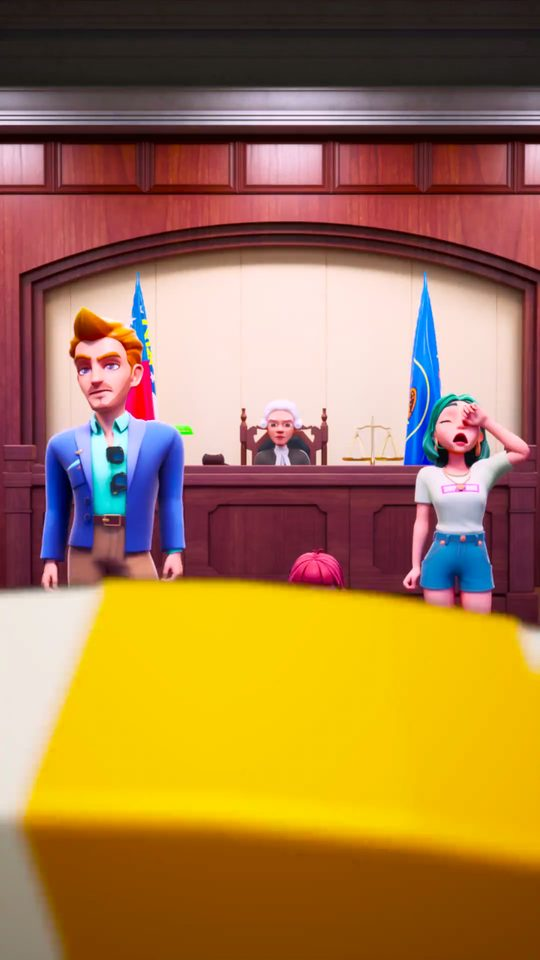
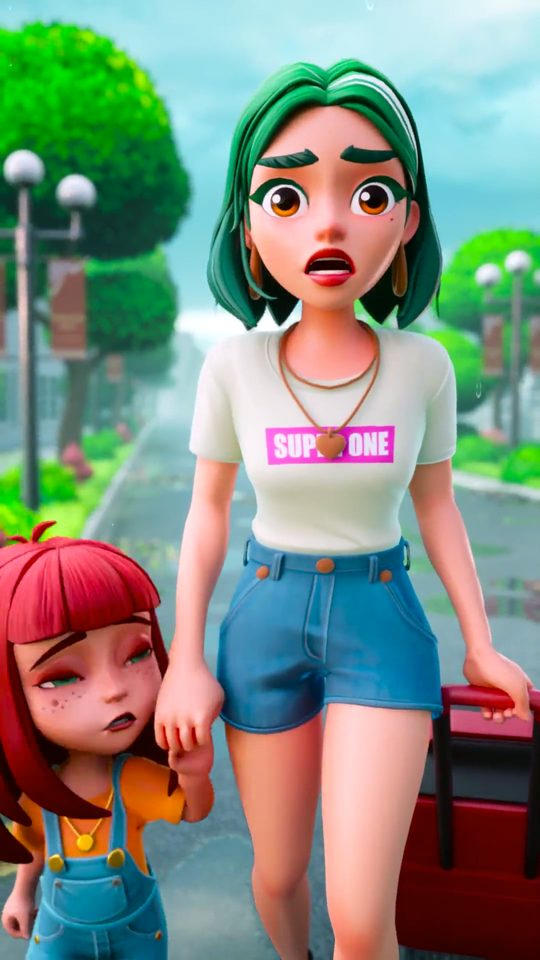
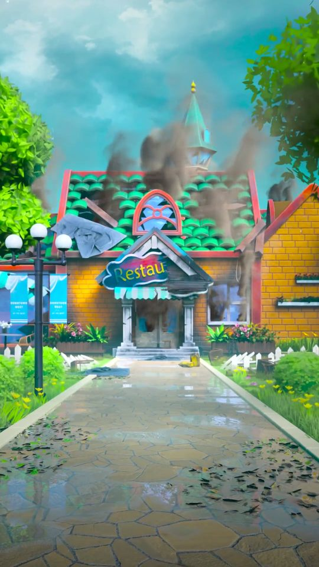
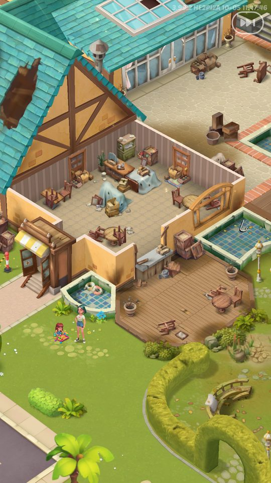
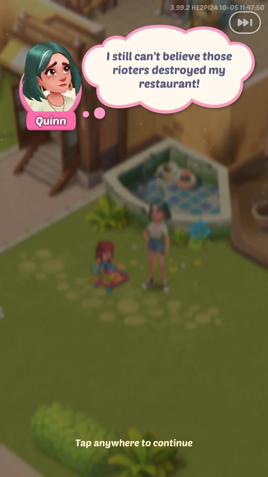
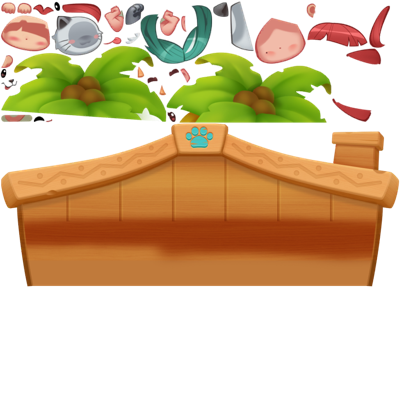

Ảnh chụp màn hình
Trải nghiệm người chơi mới gồm: màn tải trước (PreInitView), chấp nhận chính sách, CG mở đầu dạng video (assets/cg_casino.mp4, 24,39 giây: phiên tòa, Quinn…
Mô tả
- Trải nghiệm người chơi mới gồm: màn tải trước (PreInitView), chấp nhận chính sách, CG mở đầu dạng video (assets/cg_casino.mp4, 24,39 giây: phiên tòa, Quinn kéo vali, quán ăn bốc cháy) phát qua UIVideoPlayer, rồi chuỗi tutorial trên bảng merge 'đám cháy' (pre_fire: Into the Flames / Out of the Fire), giao đơn đầu tiên cho Olivia và mở nhiệm vụ Chores ngày 1.
- Mã còn chứa một CG tương tác bằng Spine 3 cảnh (SceneCG: Quinn/Olivia, màn tìm đồ chăn–rèm–ghế, Colton/Sophia) với nút Skip.
- Sau đó các tutorial theo ngữ cảnh mở dần (năng lượng, booster, bong bóng, kho, rương, thẻ, sự kiện…) và sự kiện tân thủ 'Rookie Report' (NoviceTask) theo ngày.
Còn thiếu / chưa xác minh
Mở khóa & điểm vào
Lần chạy đầu (FirstOpenTime); PlayCGForNewUser(isDirectPlay) chỉ chạy cho người chơi mới. Video phát lại ở mỗi lần mở game cho tới khi qua được bước tiếp theo (quan sát trên LDPlayer).
Điểm vào:
- Khởi động game lần đầu
- Tutorial ngữ cảnh khi gặp tính năng mới
- NoviceTaskBoardEntry (Rookie Report)
Cách hoạt động
- ApplicationManager.InitOrderly chạy các bước nạp (log LoadingStage: init → privacyPolicy → sso → login → cdn → fileCfg → sync → checkRes → scene → loadview → basesceneview → finish) trong khi PreInitView hiển thị thanh tiến độ/tải (UpdateProgress, lỗi mạng → OpenNetworkErrorWindow với Retry/Exit).
- Vào game ('enter game True'), với người chơi mới ApplicationManager.PlayCGForNewUser tải VideoClip qua AddressableLoader.LoadVideoClip và phát bằng UIVideoPlayer: VideoPlayer render vào RenderTexture (CreateRenderTexture) gắn RawImage; Play(onComplete) lưu callback, OnPrepareCompleted bắt đầu phát, OnLoopPointReached gọi callback hoàn tất, OnErrorReceived báo lỗi.
- Callback hoàn tất trả quyền cho Lua để mở hội thoại đầu tiên ('I still can't believe those rioters destroyed my restaurant!' – Tap anywhere to continue).
- Tutorial bảng merge: đi vào Kitchen (tutorial_tap_level_fire_button), merge 2 vật phẩm, merge để đào vật phẩm bị vùi, chạm máy tạo, giao đơn cho Olivia, hoàn thành nhiệm vụ đầu.
- Các tutorial khác kích hoạt khi gặp tính năng.
- Rookie Report: nhiệm vụ theo ngày cho tân thủ, gom token đổi thưởng.
Luồng chi tiết theo code
ApplicationManager.InitOrderly chạy các bước nạp (log LoadingStage: init → privacyPolicy → sso → login → cdn → fileCfg → sync → checkRes → scene → loadview → basesceneview → finish) trong khi PreInitView hiển thị thanh tiến độ/tải (UpdateProgress, lỗi mạng → OpenNetworkErrorWindow với Retry/Exit). Vào game ('enter game True'), với người chơi mới ApplicationManager.PlayCGForNewUser tải VideoClip qua AddressableLoader.LoadVideoClip và phát bằng UIVideoPlayer: VideoPlayer render vào RenderTexture (CreateRenderTexture) gắn RawImage; Play(onComplete) lưu callback, OnPrepareCompleted bắt đầu phát, OnLoopPointReached gọi callback hoàn tất, OnErrorReceived báo lỗi. Callback hoàn tất trả quyền cho Lua để mở hội thoại đầu tiên ('I still can't believe those rioters destroyed my restaurant!' – Tap anywhere to continue). Tutorial bảng merge: đi vào Kitchen (tutorial_tap_level_fire_button), merge 2 vật phẩm, merge để đào vật phẩm bị vùi, chạm máy tạo, giao đơn cho Olivia, hoàn thành nhiệm vụ đầu. Các tutorial khác kích hoạt khi gặp tính năng. Rookie Report: nhiệm vụ theo ngày cho tân thủ, gom token đổi thưởng.
Ảnh chụp màn hình (10)
7 ảnh chụp trong game (BlueStacks/LDPlayer, tài khoản cấp 4); 3 ảnh tài nguyên trong APK. Bấm ảnh để phóng to; nhãn UC dẫn tới use case tương ứng.
















Phần thưởng
Phần thưởng theo code
| Ngữ cảnh | Phần thưởng | Evidence |
|---|---|---|
| Rookie Report | Thưởng theo token tân thủ | novicetask_des |
Số liệu chính
| Chỉ số | Giá trị | Nguồn |
|---|---|---|
| CG mở đầu | 4.852.011 byte, 24,39 s | assets/cg_casino.mp4 — APK assets/ (đo mvhd) |
Use case (6)
Bấm vào từng use case để mở. Mở/đóng tất cả
UC-01 Tải ban đầu
Các bước- PreInitView.UpdateState(BeginInit)
- Hiện thanh tiến độ (UpdateProgress theo byte)
- Lỗi mạng → NetworkErrorWindow Retry/Exit
| Actor | System |
|---|---|
| Trigger | Mở game |
| Điều kiện | — |
| Kết quả | Vào màn chính |
| Quy tắc / số liệu | 12 LoadingStage, xem Infrastructure |
| Evidence | PreInitView.UpdateState, UpdateProgress, OpenNetworkErrorWindow, OnRetryBtnClick, OnExitBtnClick; log '[PreInitView]Update state -> BeginInit' |
UC-02 Phát CG video cho người chơi mới
Các bước- PlayCGForNewUser(isDirectPlay)
- AddressableLoader.LoadVideoClip
- UIVideoPlayer.Play(clip, onComplete)
- OnPrepareCompleted → phát
- OnLoopPointReached → onComplete
| Actor | System |
|---|---|
| Trigger | enter game với tài khoản mới |
| Điều kiện | Chưa xem CG |
| Kết quả | Chuyển sang hội thoại mở đầu và tutorial |
| Quy tắc / số liệu | Video cg_casino.mp4 dài 24,39 s. Hoàn tất hoàn toàn dựa vào sự kiện VideoPlayer (loopPointReached → onComplete; errorReceived → OnVideoError); không có timeout dự phòng |
| Evidence | ApplicationManager.<PlayCGForNewUser>d__75; UIVideoPlayer.Play/OnPrepareCompleted/OnLoopPointReached/OnErrorReceived/CreateRenderTexture; assets/cg_casino.mp4; PseudoC UIVideoPlayer.c (OnLoopPointReached RVA 0x132DBC4, PlayInternal 0x132D884, OnErrorReceived 0x132DC20) |
UC-03 CG tương tác Spine (3 cảnh)
Các bước- Cảnh 1: Quinn, Olivia, bánh mì, bong bóng, nút Next
- Cảnh 2: hội thoại + tìm đồ (OnCheckQuilt/Couch/Curtain), Judge đúng/sai, Colton, Sophia
- Cảnh 3: Quinn, gió
- Skip bất cứ lúc nào
| Actor | Player |
|---|---|
| Trigger | SceneCGManager.StartCG |
| Điều kiện | Luồng CG cũ/biến thể |
| Kết quả | Gọi _luaCallback khi xong/skip |
| Quy tắc / số liệu | Âm thanh scene_1_* … scene_3_wind (18) |
| Evidence | SceneCGManager.StartCG/OnFirstSceneEnd/OnSecondSceneEnd/OnThirdSceneEnd/Skip/SkipCG; SceneCGSecondScene.OnCheckQuiltClicked/OnCheckCouchClicked/OnCheckCurtainClicked/Judge |
UC-04 Tutorial bảng merge đầu tiên
Các bước- Vào Kitchen (bảng đám cháy)
- Merge 2 vật phẩm
- Merge để mở vật phẩm bị vùi
- Chạm máy tạo
- Giao bánh mì cho Olivia
- Hoàn thành nhiệm vụ đầu
| Actor | Player |
|---|---|
| Trigger | Sau CG |
| Điều kiện | — |
| Kết quả | Người chơi nắm vòng chơi cơ bản |
| Quy tắc / số liệu | Bản fire (tutorial_*_fire) và bản thường (tutorial_merge_basic_*) |
| Evidence | text tutorial_tap_level_fire_button, tutorial_merge_basic_fire_1..3, tutorial_spawn_basic_fire, tutorial_serve_order_fire_1, tutorial_finish_quest_fire; prefab TutorialBoardWindow |
UC-05 Tutorial theo ngữ cảnh
Các bước- TutorialPopupWindow chỉ dẫn từng bước
| Actor | System |
|---|---|
| Trigger | Gặp tính năng mới lần đầu |
| Điều kiện | — |
| Kết quả | — |
| Quy tắc / số liệu | Các nhóm: open_box, energy_boost(+super/switch), scissor_merge, seafood, card_item_intro/use, piggy_bank_rwd, cache_item, bakeout, nameandportrait, gift_customer, puzzle, cooking_frenzy, chest_customer, refill_energy, shop, bubble, item_detail, order_item_info, speed_bubble, pick_bottle, gold_boost, reward_avatar, change_avatar |
| Evidence | text tutorial_*; prefab Prefabs/BaseView/TutorialPopupWindow, NotificationTutorialWindow |
Cấu hình (6)
Gộp mọi nguồn: const trong code, JSON mặc định trong Resources, bảng static, storage key, AB test, cờ server.
| Nguồn | Key | Kiểu | Giá trị | Ý nghĩa | Nơi định nghĩa |
|---|---|---|---|---|---|
| asset | assets/cg_casino.mp4 | video | 4.852.011 byte, 24,39 s | CG mở đầu | APK assets/ (đo mvhd) |
| asset | VideoFileConfig | ResConfig | manor_cg → AreaRes/CGInTimeline/Area20/manor_cg.mp4 | CG trong timeline khu 20 | Assets/DataConfig/VideoFileConfig.asset |
| config class | UIVideoPlayer serialized | fields | m_defaultClip, m_defaultURL, m_playOnAwake, m_loop, m_aspectRatio, m_textureWidth/Height, m_resolutionScale (0.1–1), m_progressUpdateInterval | Cấu hình phát video; render vào RenderTexture theo kích thước/scale | dump.cs UIVideoPlayer |
| config class | ScreenFitterSceneCG | static float | STANDARD_WIDTH / STANDARD_HEIGHT / STANDARD_RATIO | Khung chuẩn cho CG Spine | dump.cs |
| storage key | tutorial | table | — | Trạng thái tutorial đã xem | CSDL SQLCipher |
| storage key | FirstOpenTime | int | unix | Mốc người chơi mới | PlayerPrefs |
Giao diện (UI)
| Element | Class | Mục đích |
|---|---|---|
| Màn tải | PreInitView (+PreInitText, PreInitLocalization) | Tiến độ tải trước khi Lua chạy |
| Trình phát CG | Prefabs/Common/CGPlayer (UIVideoPlayer) | Phát video CG |
| CG Spine | SceneCG/SceneCGManager, scene1..3 | CG tương tác |
| Tutorial | Prefabs/Window/Tutorial/TutorialBoardWindow, Prefabs/BaseView/TutorialPopupWindow | Hướng dẫn |
| Rookie Report | NoviceTaskActivity/* | Sự kiện tân thủ |
Analytics (1)
| Event | Tham số | Khi nào |
|---|---|---|
launchTime (BI) | step=enterGame, time, model, system, uuid, newInstall, userid, newUser | khi vào game (SavedCacheLogs) |
Storage keys
tutorial FirstOpenTime
Chưa đọc được / ghi chú
- Nội dung từng bước tutorial và điều kiện kích hoạt nằm trong Lua mã hóa
Tính năng liên quan
Bảng merge Nhiệm vụ cốt truyện Hạ tầng: tải, hotfix, mạng, Lua Tài khoản, đăng nhập & quyền riêng tư
Nguồn đã đọc
- notes/packs/IntroTutorial.md
- dump.cs (UIVideoPlayer, ApplicationManager, SceneCG*)
- appendix/runtime.md
- facts/runtime/raw/*_mlog.txt
- RecoveredNative/PseudoC/Assembly-CSharp/UIVideoPlayer.c